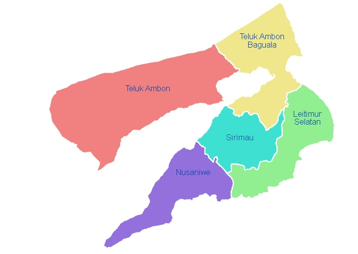

Kota Ambon berdiri dengan dasar hukum UU Nomor 60 Tahun 1958 yang diluncurkan pada 17 Juli 1958. Kota Ambon
merupakan bagian dari Provinsi Maluku. Kota Ambon berstatus sebagai salah satu kota di Indonesia. Layaknya
seperti kota-kota lain di Indonesia, administrasi kota terbagi menjadi tiga tingkatan: kota, kecamatan, dan
keluruhan serta desa. Sebagai bagian dari Kepulauan Maluku, sebagian desa di kota pun dikenal dengan istilah
negeri.
Administarsi kota dipimpin oleh seorang wali kota yang bertanggung jawab kepada DPRD Kota Ambon, sesuai dengan
Peraturan Pemerintah Nomor 108 Tahun 2000. Wali kota dan wakil wali kota Ambon berkedudukan di Balai Kota
Ambon. Administrasi kota juga dilakukan oleh DPRD kota yang sama-sama dipilih rakyat. Secara administratif
wilayah Kota Ambon dibagi menjadi 5 kecamatan. 5 kecamatan tersebut terbagi lagi menjadi 50 kelurahan dan
desa.Kecamatan terbesar ialah Sirimau dengan penduduk sebesar 178.611 jiwa, sedangkan kecamatan terkecil
ialah Leitimur Selatan dengan penduduk sebesar 11.862 jiwa pada 2016.
Kota Ambon terdiri dari 5 kecamatan, 20 kelurahan, 20 negeri (setingkat desa), dan 10 desa. Pada tahun 2021, jumlah penduduknya mencapai 347.664 jiwa dengan luas wilayah 298,61 km² dan sebaran penduduk 1.164 jiwa/km².
Kota Ambon pun menjajaki sejumlah mitra kerja sama kota kembar dengan beberapa kota di dunia. Saat ini terdapat lima kota di luar negeri dan satu kota dalam negeri yang menjalin hubungan kerja sama ini bersama Ambon, antara lain Guam, Amerika Serikat; Vlissingen, Belanda; Darwin, Australia; Kyoto, Jepang; New York, Amerika Serikat; dan Batam, Indonesia.